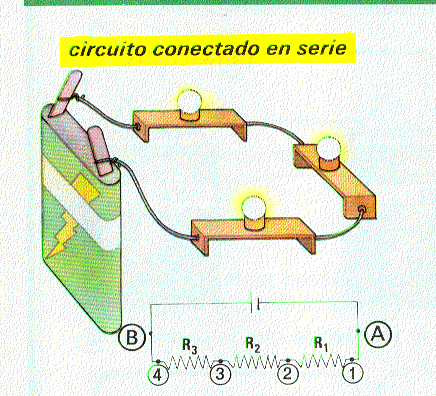
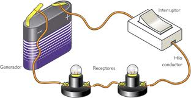
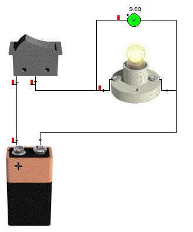
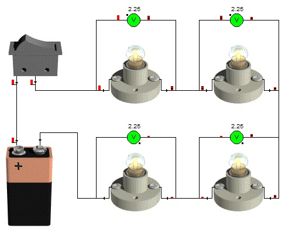
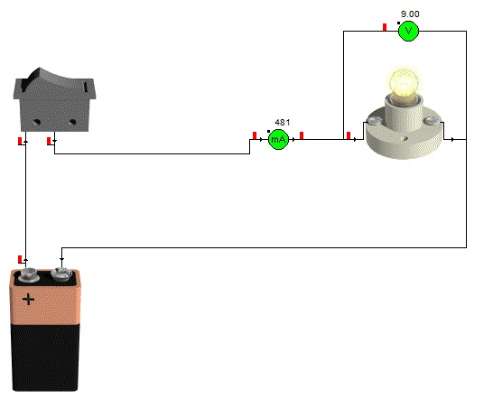
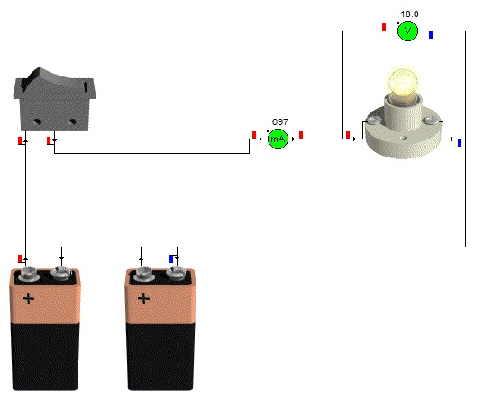
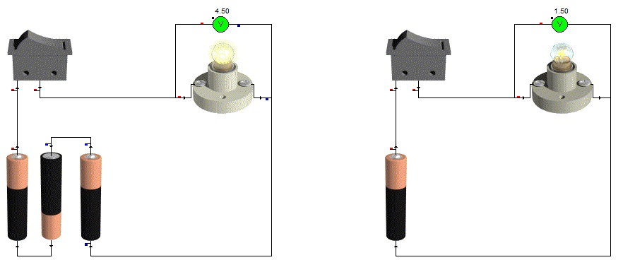

Serie
RECEPTORES
Se conectan los receptores uno a continuación de otro.


Ejemplos de circuitos eléctricos.
Características:


-Si se funde una bombilla, o la desconectamos, las demás dejan de lucir. Esto es lógico, ya que el circuito se interrumpe y no pasa la corriente.
PILAS
Si conectamos 2 pilas en serie, es decir, el polo negativo de una con el polo positivo de la otra, lo que estamos haciendo es aumentar el voltaje del que disponemos. El voltaje total, sería la suma de los voltajes de cada una de las pilas.
En los siguientes circuitos se observa, que si tenemos una pila de 9V, en la bombilla, hay 9V también. Pero si añadimos una segunda pila de 9V colocada en serie (circuito2), en la bombilla, tenemos 18V, es decir, la suma de las dos pilas de 9V.



Una pila de 1,5V, apenas consigue que la bombilla luzca, pero si conectamos 3 pilas en serie, lo que hacemos es sumar los voltajes, por lo que tenemos 4,5V. Muchos aparatos eléctricos que utilizamos con frecuencia y que utilizan pilas, lo que hacen es colocarlas en serie para aumentar el voltaje, es decir, la cantidad de energía.
Obra publicada con Licencia Creative Commons Reconocimiento Sin obra derivada 4.0